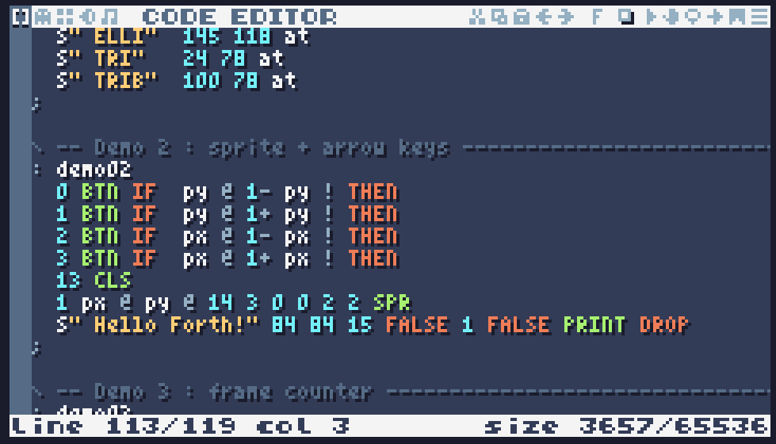

Forth pour TIC-80
Portage du langage Forth (basé sur pforth) comme langage de script pour TIC-80, la console fantasy pour créer, jouer et partager de petits jeux rétro. Ajoute Forth à la liste des langages disponibles pour écrire des cartouches, aux côtés de Lua, JavaScript, Ruby, etc.
